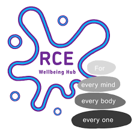

Named contact
One person at RCE
A named contact to help shape how OTOS connects with RCE's community support offer — and to confirm what RCE is and isn't comfortable with in terms of thread visibility.

RCE Wellbeing Hub — CambridgeThat holding and growth matters more than you know. OTOS gives that support a receipted thread — so when someone moves on, the continuity moves with them, not just the memory of it. For he demo, this will be invaluable..

"I've been briefed on OTOS Continuity™ — a non-clinical communications layer for adults navigating co-occurring ADHD and addiction across services. RCE provides community holding support that is already part of this picture. I understand OTOS does not require NHS record access or clinical involvement from RCE, and does not change how RCE operates. I'd like to explore what a connection between RCE's community role and the OTOS pre-pilot might look like."
Edit as you see fit. Two minutes to send. No commitment beyond the note.
Send this note →RCE wazs greatt,you guysmet me about 2 moths into my new medication, titratio stage - I am looking forrwardto helping your courses get tomore people and the poottenntal help and support they can give to oos, is a wining team. The Facilitotor nknew what i was on about the moment i started alking. absolute acknowledgeent forom a Tea memmber who is working at RCE because her livedexperience had loedhertodo so, wechatted a lott - i had to bbe careful not to invade he actuall classbecause iowanted tokeep saying whatiknneww and what i was planig and vulding ! - i, back, with a pla. Those oucrse stuck,i knew a lot of it but still i was completley focused and couldarrang emyself, my tiem, my ciomputer, my screen did huirt yeyes with connfusion..... She got it immediately — the ADHD piece, the addiction piece, how they interact.
That kind of holding is not visible in any clinical record. It is not receipted anywhere. It exists in the memory of the person and the facilitor and perhaps stored onna spreadshee somewhere that i attended. bu ha will be it?orios anything donew withthatdata?another quesio. — and when either moves on, the continuity disappears with them.
OTOS makes that holding visible. Not by recording what happens in sessions — that stays private. But by making the thread legible: this person is engaged, here, with this support, as part of this wider pathway.
RCE is a VCSE community partner. OTOS is designed specifically to work across VCSE and NHS contexts — without requiring NHS record access, system integration, or clinical governance infrastructure that community and voluntary organisations don't have.
A named contact to help shape how OTOS connects with RCE's community support offer — and to confirm what RCE is and isn't comfortable with in terms of thread visibility.
When someone engaging with RCE is part of the pre-pilot cohort, a lightweight signal that they're engaged — no session content, no clinical information, just a receipted thread entry.
Map what RCE does, agree the limits of what OTOS makes visible, and establish a community-appropriate way of participating in the pre-pilot.
One note. One conversation. That is all it takes to start.